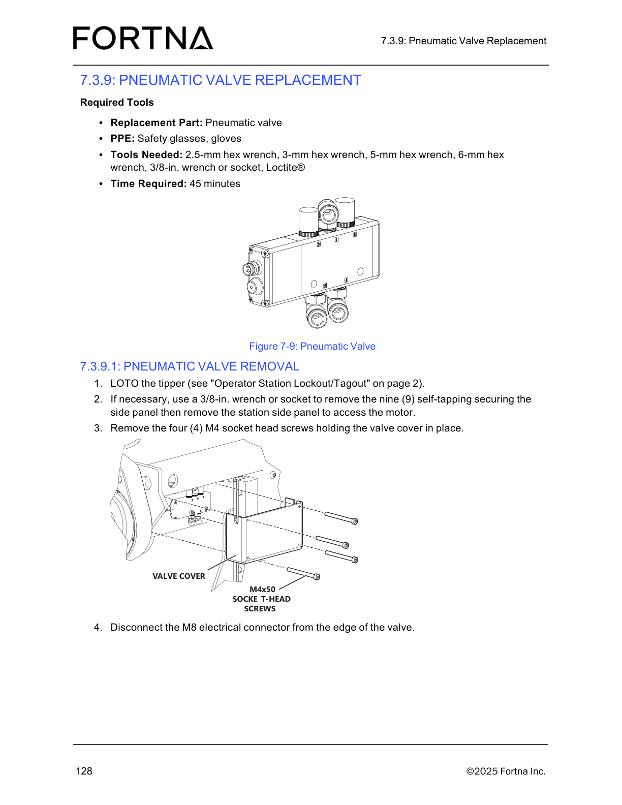

| Procedure ID | proc_remove_tote_sensor_v1 |
|---|---|
| Title | Remove Tote Sensor |
| Procedure Type | operation |
| Primary Role | L2_support |
| Support Safe | No |
| Validation Status | needs_sme_review |
| Merge Status | source_finalized |
Safely remove the tote sensor from the tipper by first performing lockout/tagout using the referenced Operator Station Lockout/Tagout procedure, then disconnecting the M8 connector and M3 socket-head screw, and finally pulling the sensor out.
Use this procedure when the tote sensor must be removed from the tipper as documented in the source manual.
Responsible role: L2_support
Instruction:
LOTO the tipper using the referenced "Operator Station Lockout/Tagout" procedure on page 2 before performing any tote sensor removal work.
Expected result:
The tipper is locked out/tagged out in accordance with the referenced procedure.
Stop or Escalate If:
Responsible role: L2_support
Instruction:
Disconnect the M8 connector and the M3 socket-head screw.
Expected result:
The tote sensor is electrically disconnected and no longer secured by the M3 socket-head screw.
Screens / Images:

Stop or Escalate If:
Responsible role: L2_support
Instruction:
Pull the sensor out.
Expected result:
The tote sensor is removed from the tipper.
Stop or Escalate If: